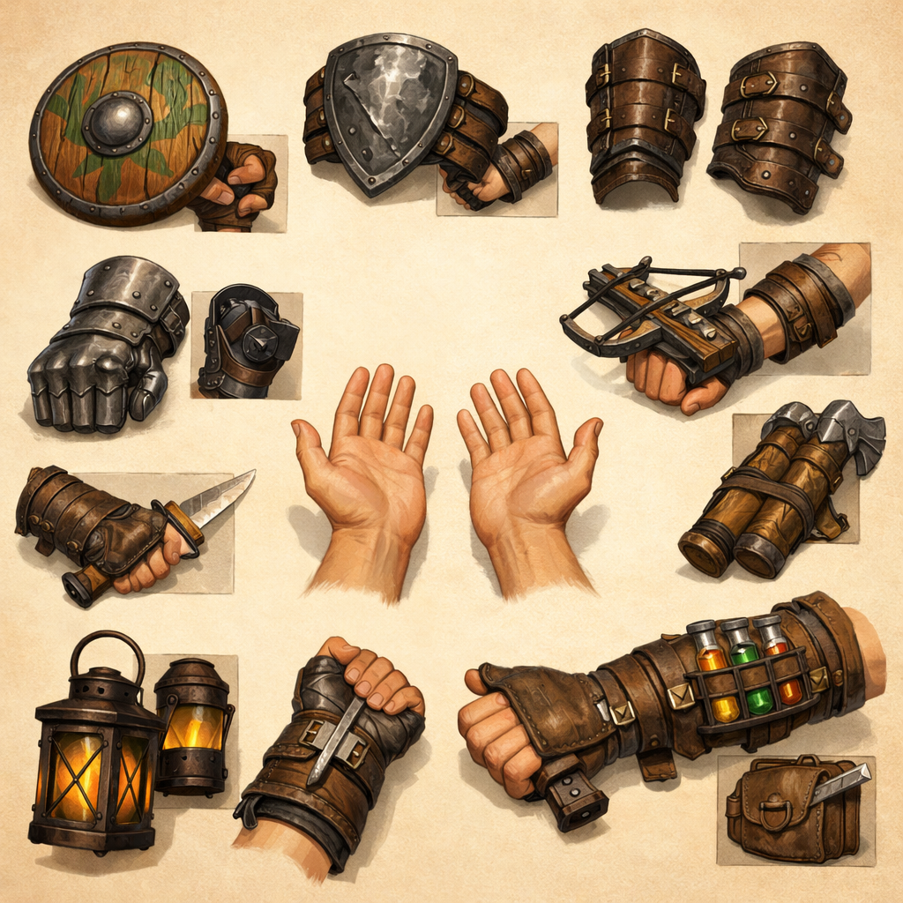

concept-01
Theme Exploration Set
Create a broad fantasy RPG prop exploration sheet for first person hands forearms in the viewmodel room. This is a thematic exploration, not a single production asset. Show multiple candidate props or prop groupings on a plain background with enough separation to identify distinct asset opportunities. Mood should feel grounded, crafted, stylized, warm, readable; materials should read as wood, iron, worn finish; style constraints: readable silhouette, game-friendly detail, no ornate overload.